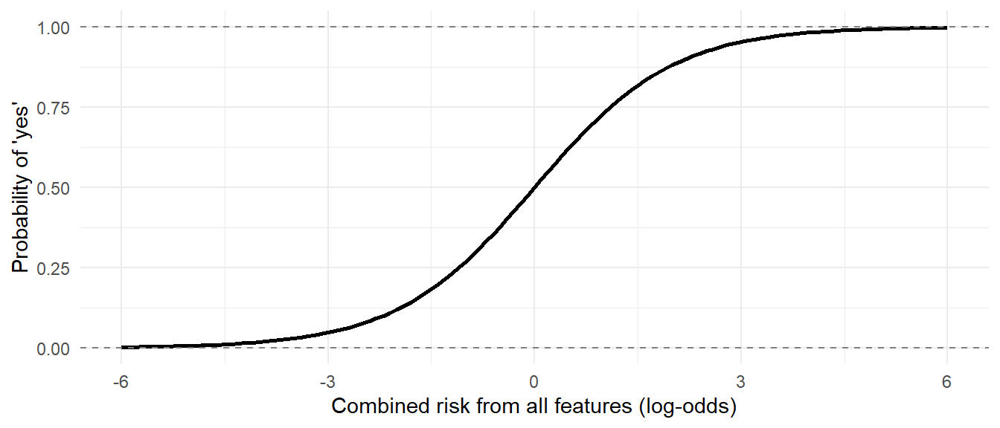
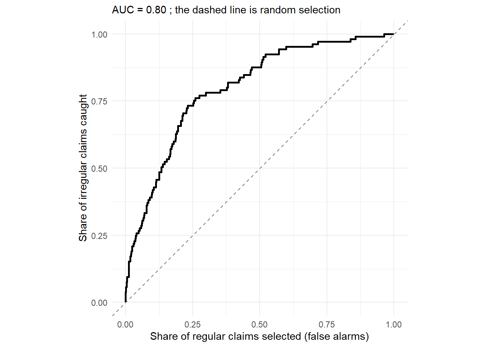

39 Logistic Regression for Risk Scoring
In Chapter 37 and Chapter 38 we used linear regression to predict a number, like the expected expenditure of an office. Many audit questions, though, have a yes or no answer. Was this refund claim irregular? Will this contract overrun? Is this beneficiary ineligible? We cannot examine every case, so we would like to know, before examining them, which cases are most likely to be a “yes”.
Logistic regression answers exactly this. It learns from cases whose outcome is already known, like claims examined in last year’s audit, how the chance of a “yes” depends on the features of a case. It then gives every new case a risk score, the estimated probability of a “yes”. Examining the highest-scoring cases first finds far more irregularities for the same effort than picking cases at random.
Logistic regression is the workhorse of risk scoring in tax departments, banks and insurers. For auditors it has one more virtue. Its results can be explained in plain words, “claims of merchant exporters had about twice the odds of being irregular”, which matters when a selection has to be justified.
Prerequisites
39.1 From a straight line to an S-curve
Why not use linear regression for a yes/no outcome, coding “yes” as 1 and “no” as 0? Because a straight line goes on rising, or falling, for ever. For large enough values it predicts “probabilities” above 1 or below 0, which make no sense.
Logistic regression instead fits an S-shaped curve, which always stays between 0 and 1. It rises slowly at first, then steeply, and then flattens out as it approaches 1.
tibble(x = seq(-6, 6, by = 0.1)) |>
ggplot(aes(x, plogis(x))) +
geom_line(linewidth = 1) +
geom_hline(yintercept = c(0, 1), linetype = "dashed", colour = "grey50") +
labs(x = "Combined risk from all features (log-odds)", y = "Probability of 'yes'") +
theme_minimal()
To understand the output, we need one idea, the odds. The odds of an event are the chance that it happens divided by the chance that it does not.
- A probability of 0.5 is odds of 0.5/0.5 = 1, often said “1 to 1” or “evens”.
- A probability of 0.2 is odds of 0.2/0.8 = 0.25, or “1 to 4”.
- A probability of 0.8 is odds of 0.8/0.2 = 4, or “4 to 1”.
Logistic regression is a linear regression, not on the probability itself, but on the logarithm of the odds (the log-odds). We need not work with log-odds directly. What matters is how to read the result. Each coefficient, converted with exp(), becomes an odds ratio, the number by which the odds are multiplied when that feature increases by one unit. An odds ratio of 2 doubles the odds, 1 leaves them unchanged, and 0.5 halves them.
39.2 Our data, last year’s refund audit
Exporters can claim a refund of the GST paid on their inputs. Refunds are a known risk area, because fake input tax credit, claimed on invoices from suppliers who never paid the tax, can be turned into cash. Last year, the audit party examined 2,000 refund claims in detail, and recorded whether each was found irregular. For each claim we know
-
exporter_type, a manufacturer or a merchant exporter (who buys goods and exports them without manufacturing), -
reg_months, how many months the claimant had been registered under GST, -
amount_lakh, the refund claimed, in ₹ lakh, -
nonfiler_pct, the percentage of the claimant’s input tax credit which came from suppliers who had not filed their own returns, -
irregular, the outcome of the audit.
Code to create the refund claims
make_claims <- function(n, prefix) {
tibble(
claim_id = sprintf("%s-%04d", prefix, 1:n),
exporter_type = sample(c("Manufacturer", "Merchant"), n, TRUE, prob = c(0.65, 0.35)),
reg_months = pmax(1, round(rexp(n, 1 / 40))),
amount_lakh = round(rlnorm(n, log(8), 1), 2),
nonfiler_pct = round(100 * rbeta(n, 0.6, 6), 1)
) |>
# The true risk, unknown to the auditor: higher for merchants, for claimants
# registered less than a year ago, for larger claims, and above all for
# credit from non-filing suppliers
mutate(true_logodds = -4.3 + 1.1 * (exporter_type == "Merchant") +
1.5 * (reg_months < 12) + 0.3 * log(amount_lakh) + 0.08 * nonfiler_pct,
irregular = runif(n) < plogis(true_logodds)) |>
select(-true_logodds)
}
set.seed(2028)
past <- make_claims(2000, "RF23")past# A tibble: 2,000 × 6
claim_id exporter_type reg_months amount_lakh nonfiler_pct irregular
<chr> <chr> <dbl> <dbl> <dbl> <lgl>
1 RF23-0001 Manufacturer 50 2.15 11.2 FALSE
2 RF23-0002 Merchant 55 4.04 3.4 FALSE
3 RF23-0003 Manufacturer 99 4.44 9.7 FALSE
4 RF23-0004 Merchant 62 1.43 1.6 FALSE
5 RF23-0005 Manufacturer 47 5.12 10.9 TRUE
6 RF23-0006 Manufacturer 11 3.07 0.7 FALSE
7 RF23-0007 Merchant 53 2.46 2.7 FALSE
8 RF23-0008 Manufacturer 23 4.19 6.5 FALSE
9 RF23-0009 Merchant 4 7.06 9.6 TRUE
10 RF23-0010 Merchant 17 11.9 0.3 TRUE
# ℹ 1,990 more rows# A tibble: 1 × 3
claims irregular irregular_pct
<int> <int> <dbl>
1 2000 307 30700About 15% of the claims examined were irregular. If we picked claims at random, about 15 of every 100 examined would turn out irregular. Let us see if we can do better.
39.3 Look at the data first
Before fitting any model, let us see how the irregular share varies with each feature. For the numeric features, we group them into bands with cut().
# A tibble: 2 × 3
exporter_type claims irregular_pct
<chr> <int> <dbl>
1 Manufacturer 1288 11
2 Merchant 712 23.2# A tibble: 5 × 3
nonfiler_band claims irregular_pct
<fct> <int> <dbl>
1 Up to 5% 1003 8
2 5-10% 351 11.7
3 10-20% 388 19.3
4 20-30% 149 34.2
5 Over 30% 109 55 # A tibble: 5 × 3
registered claims irregular_pct
<fct> <int> <dbl>
1 Up to 6 months 293 31.1
2 6-12 months 238 27.3
3 1-2 years 410 12
4 2-5 years 597 10.2
5 Over 5 years 462 8.9Merchant exporters, and claims with much of their credit from non-filers, are clearly riskier. The registration table shows something worth noting. The risk is high for claimants registered for less than a year, and then drops sharply, changing only gently after that. It does not fall steadily month by month. We will come back to this.
39.4 Training and test data
A model always fits the data it learnt from better than new data, just as a student does best on questions already seen. To judge honestly how well it will work on new claims, we keep part of the data aside. The model learns from 70% of the claims, the training set, and is judged on the remaining 30%, the test set, which it has never seen.
39.5 Fitting the model
Logistic regression is fitted with glm(), the function for generalised linear models. The formula is written as in lm(). The argument family = binomial makes it a logistic regression. Since amounts are skewed, we use the logarithm of the amount, as is usual for money.
Call:
glm(formula = irregular ~ exporter_type + reg_months + log(amount_lakh) +
nonfiler_pct, family = binomial, data = train)
Coefficients:
Estimate Std. Error z value Pr(>|z|)
(Intercept) -3.208706 0.271141 -11.834 < 2e-16 ***
exporter_typeMerchant 1.241768 0.174881 7.101 1.24e-12 ***
reg_months -0.014396 0.002945 -4.888 1.02e-06 ***
log(amount_lakh) 0.206591 0.089481 2.309 0.021 *
nonfiler_pct 0.082169 0.007209 11.399 < 2e-16 ***
---
Signif. codes: 0 '***' 0.001 '**' 0.01 '*' 0.05 '.' 0.1 ' ' 1
(Dispersion parameter for binomial family taken to be 1)
Null deviance: 1155.47 on 1399 degrees of freedom
Residual deviance: 933.44 on 1395 degrees of freedom
AIC: 943.44
Number of Fisher Scoring iterations: 6The output looks like that of lm(). Every feature has a small p-value, so each is related to the risk. But the coefficients are in log-odds, which are hard to read. broom::tidy() with exponentiate = TRUE converts them into odds ratios, with confidence intervals.
# A tibble: 5 × 7
term estimate std.error statistic p.value conf.low conf.high
<chr> <dbl> <dbl> <dbl> <dbl> <dbl> <dbl>
1 (Intercept) 0.04 0.271 -11.8 0 0.023 0.068
2 exporter_typeMerchant 3.46 0.175 7.10 0 2.46 4.90
3 reg_months 0.986 0.003 -4.89 0 0.98 0.991
4 log(amount_lakh) 1.23 0.089 2.31 0.021 1.03 1.47
5 nonfiler_pct 1.09 0.007 11.4 0 1.07 1.10 Read them like this.
-
Exporter type. Merchant exporters have 3.5 times the odds of an irregular claim, compared with manufacturers with the same other features. The comparison is with the first category,
Manufacturer, just as with factors inlm(). - Credit from non-filers. Each extra percentage point multiplies the odds by 1.086. That looks small, but it is per point. Ten more points multiply the odds by 1.08610, or 2.3.
- Amount. Since we used the logarithm, the odds ratio applies to each multiplication of the amount by e (about 2.7). Larger claims are somewhat riskier.
- Months registered. An odds ratio of 0.986 per month, slightly below 1. Older registrations are slightly less risky.
Odds ratios describe association, not cause. Being a merchant exporter does not make a claim irregular. Merchant exporters have simply been riskier in this data, perhaps because fake invoices are easier to use when nothing is manufactured. The model tells us where to look, not who is guilty.
39.6 Risk scores
predict() with type = "response" gives the predicted probability for each claim, its risk score. Without type = "response", it gives log-odds.
# A tibble: 8 × 7
claim_id exporter_type reg_months amount_lakh nonfiler_pct score irregular
<chr> <chr> <dbl> <dbl> <dbl> <dbl> <lgl>
1 RF23-1771 Merchant 44 8.89 61.7 0.949 TRUE
2 RF23-1892 Manufacturer 7 42.2 66.2 0.948 TRUE
3 RF23-0148 Merchant 37 7.99 54.8 0.919 TRUE
4 RF23-0327 Merchant 5 10.1 46 0.902 TRUE
5 RF23-1585 Manufacturer 20 12.3 56.9 0.845 FALSE
6 RF23-0305 Merchant 7 14.1 36.5 0.814 TRUE
7 RF23-1821 Merchant 13 13.9 36.5 0.800 TRUE
8 RF23-1106 Merchant 25 8.15 38.6 0.782 FALSE The highest scores go to claims with a large share of credit from non-filers, often merchant exporters or recent registrations. Most of them were indeed found irregular.
39.7 How good is the model?
39.7.1 The accuracy trap
The obvious way to use a probability is to call a claim “irregular” if its score is above 0.5. Let us count how that works on the test set, in a confusion matrix.
table(predicted_irregular = test$score > 0.5, actually_irregular = test$irregular) actually_irregular
predicted_irregular FALSE TRUE
FALSE 486 87
TRUE 9 18The model is right for 84% of the claims. That sounds good, until we notice that calling every claim regular would be right for 82.5%, since most claims are regular. Worse, it catches only 18 of the 105 irregular claims, 17%. When “yes” cases are rare, as irregularities usually are, accuracy is a misleading measure. Two other measures matter to an auditor.
- Recall (or sensitivity), the share of irregular claims that the selection catches. Low recall means irregularities slip through.
- Precision, the share of selected claims that turn out irregular. Low precision means examining many clean claims.
A lower cut-off catches more irregular claims, at the cost of examining more clean ones.
evaluate_cutoff <- function(cutoff) {
picked <- test$score > cutoff
tibble(cutoff,
selected = sum(picked),
caught = sum(picked & test$irregular),
recall = round(mean(picked[test$irregular]), 2),
precision = round(mean(test$irregular[picked]), 2))
}
map(c(0.5, 0.3, 0.2, 0.1), evaluate_cutoff) |> list_rbind()# A tibble: 4 × 5
cutoff selected caught recall precision
<dbl> <int> <int> <dbl> <dbl>
1 0.5 27 18 0.17 0.67
2 0.3 77 38 0.36 0.49
3 0.2 149 62 0.59 0.42
4 0.1 290 86 0.82 0.3 There is no single right cut-off. It depends on how many claims the audit party can examine, and on the cost of missing an irregular claim compared with examining a clean one.
39.7.2 Ranking: the ROC curve and AUC
In audit we rarely need a yes/no prediction at all. We need a good ranking, so that we can examine claims from the top down as far as our resources allow. The standard measure of ranking quality is the AUC, the area under the ROC curve. It has a simple meaning. Pick one irregular claim and one regular claim at random. The AUC is the probability that the model gives the irregular one the higher score. An AUC of 0.5 is no better than tossing a coin, and 1 is a perfect ranking. In practice, 0.7 to 0.8 is useful, and above 0.8 is good.
The AUC can be calculated from ranks, in the same way as the Wilcoxon test of Section 28.8.
[1] 0.7983261The AUC on the test set is 0.80. The ROC curve itself shows, for every possible cut-off, the share of irregular claims caught against the share of regular claims wrongly selected.
roc_points <- function(score, actual) {
ord <- order(score, decreasing = TRUE)
tibble(false_alarm_rate = c(0, cumsum(!actual[ord]) / sum(!actual)),
catch_rate = c(0, cumsum(actual[ord]) / sum(actual)))
}
roc_points(test$score, test$irregular) |>
ggplot(aes(false_alarm_rate, catch_rate)) +
geom_line(linewidth = 1) +
geom_abline(linetype = "dashed", colour = "grey50") +
labs(x = "Share of regular claims selected (false alarms)",
y = "Share of irregular claims caught",
subtitle = paste("AUC =", sprintf("%.2f", auc1), "; the dashed line is random selection")) +
coord_equal() +
theme_minimal()
The further the curve bows towards the top-left corner, the better. The dashed diagonal is what random selection would achieve.
39.7.3 The gains table, in audit language
The most useful view for planning is the gains table. Sort the claims by score, divide them into ten equal groups (deciles), and count how many irregular claims each group holds.
# A tibble: 10 × 5
decile claims irregular cum_claims_pct cum_caught_pct
<int> <int> <int> <dbl> <dbl>
1 1 60 30 10 29
2 2 60 23 20 50
3 3 60 21 30 70
4 4 60 8 40 78
5 5 60 6 50 84
6 6 60 9 60 92
7 7 60 3 70 95
8 8 60 2 80 97
9 9 60 2 90 99
10 10 60 1 100 100Examining the top 20% of claims by score would have caught 50% of the irregular ones, and the top 30%, 70%. Random selection of 20% of claims would catch only about 20%. That is the value of the model, stated in terms any audit manager understands.
39.8 Making better features
Remember the registration table. The risk was high for claimants registered for less than a year, and much lower after that. But model1 uses reg_months as a straight-line effect, a small change in risk for every month. It cannot capture a jump at one year. A simple feature that says whether the claimant is a new registrant matches the pattern better.
train <- train |> mutate(new_registrant = reg_months < 12)
test <- test |> mutate(new_registrant = reg_months < 12)
model2 <- glm(irregular ~ exporter_type + new_registrant + log(amount_lakh) + nonfiler_pct,
family = binomial, data = train)
or2 <- tidy(model2, exponentiate = TRUE, conf.int = TRUE)
or2 |> mutate(across(where(is.numeric), \(x) round(x, 3)))# A tibble: 5 × 7
term estimate std.error statistic p.value conf.low conf.high
<chr> <dbl> <dbl> <dbl> <dbl> <dbl> <dbl>
1 (Intercept) 0.012 0.295 -15.0 0 0.007 0.021
2 exporter_typeMerchant 3.74 0.182 7.26 0 2.63 5.38
3 new_registrantTRUE 5.49 0.184 9.26 0 3.84 7.91
4 log(amount_lakh) 1.22 0.091 2.14 0.032 1.02 1.46
5 nonfiler_pct 1.09 0.008 11.9 0 1.08 1.11 model1 model2
0.798 0.825 New registrants have 5.5 times the odds of an irregular claim, and the AUC on the test set improves from 0.798 to 0.825.
With only about 100 irregular claims in the test set, a small difference in AUC could be the luck of one particular split. A simple check is to repeat the split many times, and see how often the new model wins. (Repeating the split in a systematic way is called cross-validation.)
auc_gain <- map_dbl(1:40, \(i) {
set.seed(i)
rows <- sample(nrow(past), size = 0.7 * nrow(past))
tr <- past[rows, ] |> mutate(new_registrant = reg_months < 12)
te <- past[-rows, ] |> mutate(new_registrant = reg_months < 12)
m1 <- glm(irregular ~ exporter_type + reg_months + log(amount_lakh) + nonfiler_pct,
family = binomial, data = tr)
m2 <- glm(irregular ~ exporter_type + new_registrant + log(amount_lakh) + nonfiler_pct,
family = binomial, data = tr)
auc(predict(m2, te), te$irregular) - auc(predict(m1, te), te$irregular)
})
c(splits = length(auc_gain), new_model_better = sum(auc_gain > 0),
average_gain = round(mean(auc_gain), 3)) splits new_model_better average_gain
40.000 38.000 0.028 The new feature improves the ranking in 38 of 40 random splits, so the gain is real. Features built from audit knowledge, like “registered less than a year ago”, “supplier and claimant share an address” or “claim filed in the last week of the quarter”, often add more than any statistical refinement. Looking at the data first, as we did, is how such features are found.
Compare models on the test set, never on the training set. Adding features always improves the fit on the training data, even useless ones. Only the test set tells whether a change really helps on new cases.
39.9 Using the model on new claims
This year, 1,500 refund claims are pending, and the audit party can examine 150 of them. Their outcomes are, of course, not known yet. We first refit the model on all of last year’s claims, since the test set has done its job, and then score the new claims.
past <- past |> mutate(new_registrant = reg_months < 12)
final_model <- glm(irregular ~ exporter_type + new_registrant + log(amount_lakh) + nonfiler_pct,
family = binomial, data = past)
set.seed(2029)
pending <- make_claims(1500, "RF24") |>
select(-irregular) |> # outcomes not known yet
mutate(new_registrant = reg_months < 12)
pending <- pending |>
mutate(risk_score = predict(final_model, newdata = pending, type = "response"),
risk_rank = min_rank(desc(risk_score)))
pending |> arrange(risk_rank) |>
select(claim_id, exporter_type, reg_months, amount_lakh, nonfiler_pct, risk_score) |>
head(10)# A tibble: 10 × 6
claim_id exporter_type reg_months amount_lakh nonfiler_pct risk_score
<chr> <chr> <dbl> <dbl> <dbl> <dbl>
1 RF24-1343 Merchant 53 14.1 67.5 0.974
2 RF24-0411 Merchant 5 3.69 47.6 0.964
3 RF24-1298 Manufacturer 1 7.25 57.4 0.956
4 RF24-0360 Merchant 3 10.6 41 0.946
5 RF24-0685 Merchant 11 7.94 39.9 0.938
6 RF24-1477 Merchant 10 62.7 34.1 0.928
7 RF24-1157 Manufacturer 1 8.17 48.3 0.905
8 RF24-0892 Manufacturer 1 17.2 46.8 0.905
9 RF24-0535 Merchant 8 17.2 32.8 0.901
10 RF24-0110 Manufacturer 4 27.6 45.3 0.900How should the 150 claims be chosen? Not only from the top of the list.
set.seed(11)
top_risk <- pending |> slice_max(risk_score, n = 120)
random_part <- pending |> anti_join(top_risk, by = "claim_id") |> slice_sample(n = 30)
selection <- bind_rows(top_risk |> mutate(basis = "Risk score"),
random_part |> mutate(basis = "Random")) |>
arrange(desc(risk_score))
count(selection, basis)# A tibble: 2 × 2
basis n
<chr> <int>
1 Random 30
2 Risk score 120We take the 120 highest-risk claims, and 30 more chosen at random from the rest, using anti_join() from Chapter 14 so that no claim is picked twice. The random part is not a waste. It keeps the selection unpredictable, so claimants cannot learn to stay just below the model’s radar. It catches kinds of irregularity the model has never seen. And it gives unbiased data for training next year’s model, which brings us to the cautions.
- The model learns only from what was examined. If last year’s audit examined mostly large claims, the model knows little about small ones. Outcomes from a partly random selection, as above, correct this over time.
- The past is not the future. Once a risk becomes known, the fraud moves elsewhere. Refit the model every year, and check its AUC on the new year’s results.
- Do not use features that should not decide treatment, such as the religion, caste or gender of a proprietor, even if they appear predictive. Such a selection cannot be defended, and usually reflects bias in past selections rather than real risk.
- A score is not evidence. A high score is a reason to examine a claim, never a finding in itself. The finding comes from the examination.
-
Watch for perfect separation. If some feature predicts the outcome perfectly in the training data, say every claim from one district was irregular,
glm()warns that “fitted probabilities numerically 0 or 1 occurred”, and the coefficients become unreliable. Merge such small groups, or drop the feature.
39.10 More than two outcomes, multinomial regression
So far each claim was either regular or irregular. Real audit results are often richer. Suppose last year’s audit party had recorded three outcomes for each claim examined.
- Clean, nothing wrong.
- Procedural lapse, such as a missing document or a wrongly filled form. The refund is due, but the claim needs correcting.
- Fraudulent, a refund claimed on fake input tax credit.
These call for very different responses. A procedural lapse calls for a letter, a fraud for an investigation. And they may have quite different causes. Lumping them together as “irregular” throws this information away. Multinomial logistic regression extends logistic regression to an outcome with three or more categories.
The idea is a small step from what we know. One category is chosen as the baseline, here Clean. The model then fits one logistic regression for each other category against the baseline: lapse against clean, and fraud against clean, at the same time. Each feature gets one coefficient for each comparison. So a feature can raise the risk of fraud while having no effect on lapses, or the other way round.
Let us give last year’s claims such three-way outcomes. Unknown to the auditor, procedural lapses are commoner among new registrants and among small claims, while fraud goes with merchant exporters, large claims and credit from non-filers, as before.
Code to create the three-way outcomes
set.seed(2030)
outcomes <- past |>
mutate(lp_lapse = -1.6 + 1.3 * new_registrant - 0.35 * log(amount_lakh),
lp_fraud = -4.6 + 1.2 * (exporter_type == "Merchant") + 0.3 * log(amount_lakh) +
0.09 * nonfiler_pct,
# probabilities of the three outcomes, from the two log-odds
p_lapse = exp(lp_lapse) / (1 + exp(lp_lapse) + exp(lp_fraud)),
p_fraud = exp(lp_fraud) / (1 + exp(lp_lapse) + exp(lp_fraud)),
u = runif(n()),
outcome = case_when(u < p_fraud ~ "Fraudulent",
u < p_fraud + p_lapse ~ "Procedural lapse",
.default = "Clean"),
outcome = factor(outcome, levels = c("Clean", "Procedural lapse", "Fraudulent"))) |>
select(claim_id, exporter_type, new_registrant, amount_lakh, nonfiler_pct, outcome)# A tibble: 3 × 3
outcome n pct
<fct> <int> <dbl>
1 Clean 1561 78
2 Procedural lapse 266 13.3
3 Fraudulent 173 8.7The first level of the factor, Clean, is the baseline. Multinomial regression is fitted with multinom() from the package nnet, which comes with every installation of R. The formula is written as before. (trace = FALSE stops it printing the progress of its calculations.)
broom::tidy() works here too, with one row for each feature and each comparison. With exponentiate = TRUE, the estimates are again odds ratios, now the odds of that outcome rather than a clean claim. We show them side by side.
# A tibble: 4 × 3
term `Procedural lapse` Fraudulent
<chr> <chr> <chr>
1 exporter_typeMerchant 1.61 (0.001) 3.78 (0)
2 new_registrantTRUE 4.22 (0) 0.71 (0.146)
3 log(amount_lakh) 0.65 (0) 1.42 (0)
4 nonfiler_pct 1.01 (0.376) 1.09 (0) Each cell shows the odds ratio, with its p-value in brackets. Reading across a row tells a clear story.
- New registrants have 4.2 times the odds of a procedural lapse, but their odds of fraud (0.71) are not clearly different from others’. Newcomers make mistakes; they are not, on this evidence, more dishonest.
- Merchant exporters have 3.8 times the odds of fraud, and a smaller rise, 1.6 times, in the odds of a lapse. (We did not plant this second effect. Even in simulated data, chance produces patterns, which is one more reason to confirm a model’s findings on fresh data.)
- Credit from non-filers raises the odds of fraud by a factor of 1.094 for each percentage point, and has little to do with lapses.
- Larger claims are more likely to be fraudulent, and less likely to have lapses, perhaps because large claimants employ professionals to file their claims.
A two-way logistic regression on “irregular” would have mixed these opposite patterns together, and blurred both.
Predictions. predict() with type = "probs" gives the probability of each outcome for each claim, and the three add up to 1.
Clean Procedural lapse Fraudulent
1 0.849 0.123 0.028
2 0.803 0.135 0.062
3 0.876 0.091 0.033
4 0.766 0.199 0.035
5 0.875 0.087 0.038
6 0.668 0.325 0.007These support two separate selections from the same list of claims: the highest probabilities of fraud for the investigation wing, and the highest probabilities of a procedural lapse for a compliance drive by letter. Each can be judged with the AUC and gains table, exactly as before, using its own column.
fraud_auc lapse_auc
0.813 0.722 (These are measured on the same claims the model learnt from, to keep the example short. In practice, use a training and test split, as earlier in the chapter.)
If the categories have a natural order, such as nil, minor and major irregularity, an ordinal logistic regression uses that order and needs fewer coefficients. It is fitted with polr() from the package MASS. When the categories are simply different kinds, as here, multinomial regression is the right choice.
39.11 A suggested workflow
- Define the outcome clearly, such as “irregularity of more than ₹1 lakh found on examination”, and collect past cases with known outcomes.
-
List candidate features from audit knowledge, and look at the outcome rate by each feature, banding numeric ones with
cut(). - Split the data into training and test sets.
-
Fit with
glm(..., family = binomial), and read the odds ratios withtidy(exponentiate = TRUE, conf.int = TRUE). - Evaluate on the test set with the AUC and a gains table. Do not rely on accuracy.
- Improve the features, comparing models only on the test set.
- Refit on all the data, and score the new cases.
- Select mostly by risk score, with a random part, within the capacity available.
- Record the model, its features and its test results in the working papers, and refit when new outcomes arrive.
- Logistic regression predicts the probability of a yes/no outcome, and its scores rank cases by risk.
-
exp()of a coefficient is an odds ratio, the factor by which the odds change for one unit of the feature. - Judge a model on data it has not seen. Use the AUC and a gains table, not accuracy, when “yes” is rare.
- Good features come from audit knowledge and from looking at the data.
- Select mostly by risk, partly at random, and treat a score as a lead, never as evidence.
- For three or more kinds of outcome, multinomial regression fits one comparison per outcome against a baseline, and shows how the drivers differ.
39.12 Summary of functions used
| Function | Package | What it does |
|---|---|---|
glm(family = binomial) |
stats | Fit a logistic regression |
multinom() |
nnet | Fit a multinomial logistic regression, for three or more outcomes |
predict(type = "probs") |
stats | Probability of each outcome, from a multinomial model |
summary() |
base R | Coefficients, standard errors and p-values of a model |
tidy(exponentiate = TRUE, conf.int = TRUE) |
broom | Odds ratios with confidence intervals, as a table |
predict(type = "response") |
stats | Predicted probabilities (risk scores) for new data |
plogis() |
stats | The logistic curve, turning log-odds into probabilities |
sample() |
base R | Split data into training and test sets |
table() |
base R | Confusion matrix of predicted and actual outcomes |
rank(), cumsum()
|
base R | Calculate the AUC and the ROC curve |
ntile(), min_rank()
|
dplyr | Divide into deciles, and rank by score |
slice_max(), slice_sample(), anti_join()
|
dplyr | Select the top-risk cases and a random part from the rest |